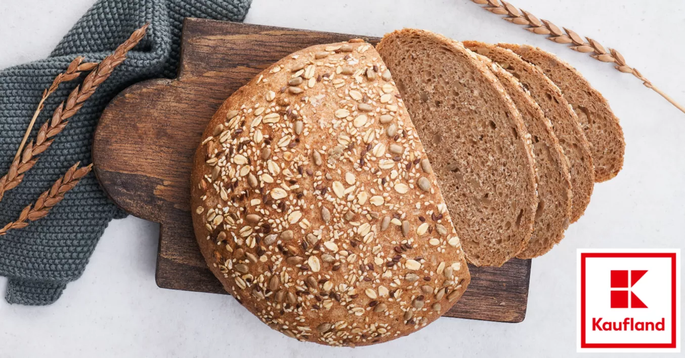
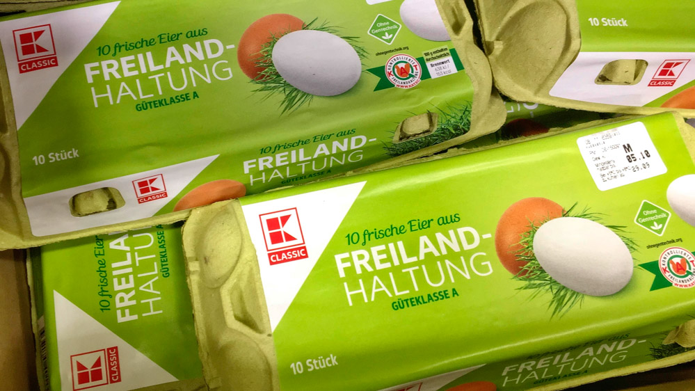
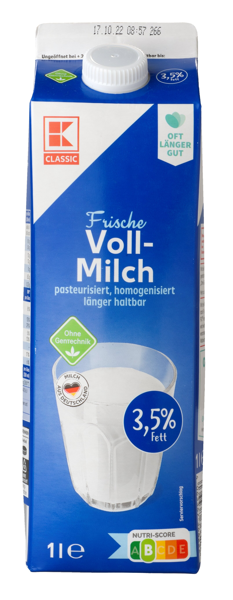
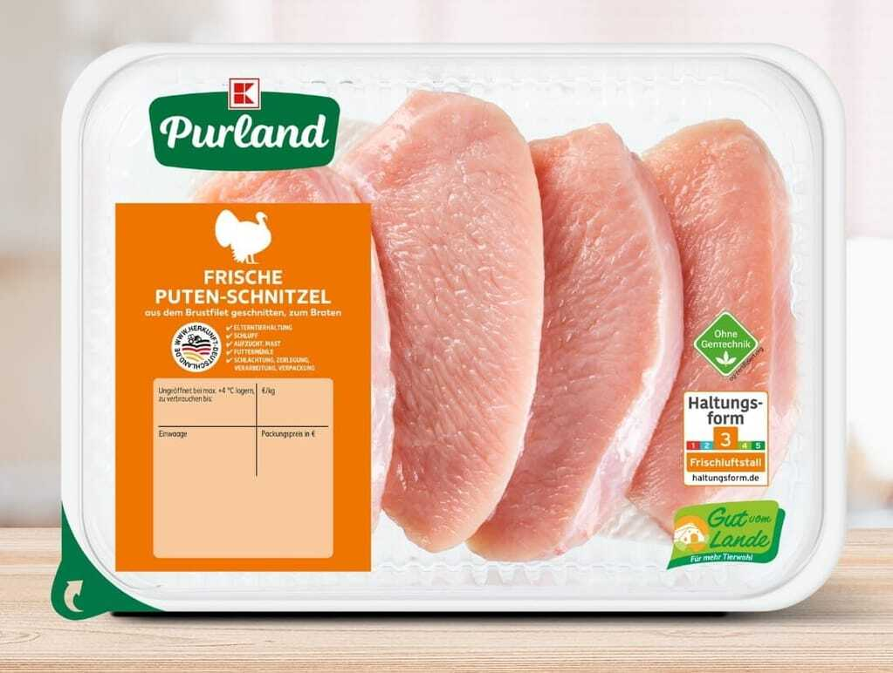
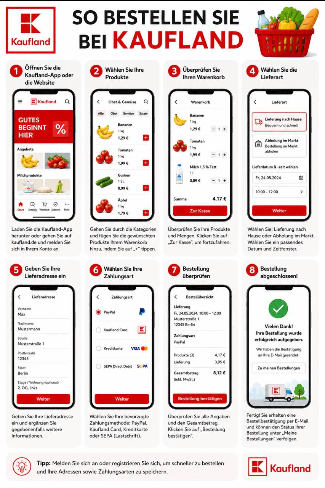

Brot
Das Brotsortiment bei Kaufland umfasst eine große Auswahl an täglich frisch gebackenen Backwaren sowie haltbaren Broten, die sich durch verschiedene Getreidesorten und Zubereitungsarten auszeichnen.
1,99


Lekeres Spas, Voller Essen
Im Kaufland kann man frisches Obst, Gemüse, Fleisch, Milchprodukte und Brot kaufen. Dort gibt es auch Haushaltswaren wie Waschmittel, Reinigungsmittel und Küchenartikel. Im Kaufland kann man Kleidung, Schuhe und saisonale Produkte für Haus und Garten finden. Außerdem werden dort Elektronik, Batterien, Lampen und kleine Haushaltsgeräte verkauft. Man kann dort auch Getränke, Süßigkeiten, Kinderartikel und Tiernahrung kaufen.
Kaufland ist eine bekannte Laden in Deutschland. Dort kann man Lebensmittel, Getränke, Haushaltswaren und viele andere Produkte kaufen. Kaufland bietet eine Grose Auswahl und oft günstige Preise.

Das Brotsortiment bei Kaufland umfasst eine große Auswahl an täglich frisch gebackenen Backwaren sowie haltbaren Broten, die sich durch verschiedene Getreidesorten und Zubereitungsarten auszeichnen.
1,99

Kaufland bietet eine breite Palette an Hühnereiern an, die sich in Haltungsform, Größe und Herkunft unterscheiden.
1,99
1,49

Das Sortiment umfasst klassische Frischmilch (pasteurisiert), länger haltbare ESL-Milch und H-Milch (ultrahocherhitzt) in verschiedenen Fettstufen (0,1% - 3,8%), sowie Ziegenmilch und vegane Alternativen.
0,99
0,49

Kaufland bietet unter der Eigenmarke K-Purland ein breites Sortiment an Qualitätsfleisch (Schwein, Rind, Geflügel) an, das größtenteils aus eigenen Fleischwerken stammt.
6,99
5,99
Das Blumenangebot bei Kaufland zeichnet sich durch eine große Vielfalt und Frische aus, die sowohl im stationären Handel als auch online verfügbar ist.
2,99
1,99
Bei Kaufland können Sie ganz einfach online bestellen. Öffnen sie die kaufland Website oder app, wählen Sie sie in den Warenkorb. Danach geben Sie Ihre lieferandresse ein, wählen die Zahlungart und schlisen Ihre Bestellung ab.
